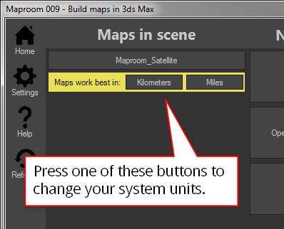

History¶
0.0.25¶
New Features¶
- SRTM1 height data with increased detail. About 30m per pixel
- Automatic zoom suggests the optimal zoom level for satellite maps Estimate zoom
- Density slider makes it easier to adjust the mesh detail on terrains
- Map export helps you gather assets when using the map further up the pipeline Export map
Fixed¶
- Openstreetmap projection now works with each available projection
0.0.21¶
New Features¶
- UTM projection very suitable for arch viz, infrastructure and civil engineering
- Measure path map layer helps to measure real world distances in projected maps Measure path
Improved¶
- Multithreaded image download. Satellite maps should generate faster
- Licensing works a bit faster. Maproom starts faster because of that
0.0.20¶
New Features¶
- Map projections many projections to pick from Introduction
- Analytics Big brother is watching you
Improved¶
- Shapefiles now a lot quicker
0.0.16¶
New features¶
- Shapefiles Added support for Esri shapefiles: Shapefile
- Splash screen Fancy splash screen to make waiting for the script to start up a bit less annoying
Improved¶
Tab Use the tab key to jump between the width and height in the location panel
0.0.14¶
New features¶
- Ripple maps A new type of map combining different zoomlevels in one map layer: Ripple
- Style sheet Add 3D styles to osm data to create a 3D environment instantly: Stylesheet
0.0.13¶
Improved¶
Real world map size Having real world map size switched on in 3dsMax no longer messes with the maps
0.0.12¶
New features¶
Notifications if you haven’t entered your Mapbox or Bing token yet. Also added videos on how to get those Map API key
Improved¶
OSM heights Massive speed improvement when matching openstreetmap shapes to terrain heights
0.0.10¶
Fixed¶
- Terrain heights caused errors in max versions before 2014. this has been fixed.
- Real world map UV coordinates would seriously mess with the projection of the terrain on the mesh. It’s now automatically disabled.
0.0.9¶
New features¶
System units notification If your system units are set to small units, like meters or inches, making maps will cause issues in 3dsMax. A map of a city of 10*10 km measures about 400.000 inches. 3dsMax has difficulty showing large units like these accurately. I advise to use kilometers or miles when making maps. Maproom now notifies you of this and offers a quick way to change the system units. More about that here: Units
A notification in the home screen helps you quickly change your system units
Fixed¶
Bing Roads works again (if you have an API key)
0.0.6¶
0.0.5¶
New features¶
- Auto updater When you open the
updatesection in the settings the script looks for updates online. If it finds one you can download and install directly by pressing the button. - Antipodal areas are now displayed correctly. If your map is positioned at both sides of the antemeridian (the 180 degree meridian east of New Zealand) your map will be displayed correctly.
Fiji: this map is covers an area west and east of the 180 degree meridian. The stretched map starts at the 180 degree meridian. That’s fixed now
Updated¶
Json updated the Newtonsoft.json library to 8.0.2
0.0.4¶
Initial release